Highway 1
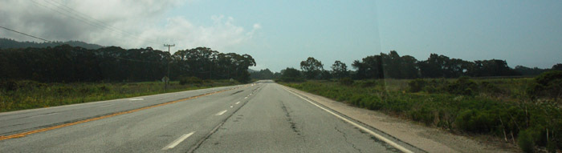
Regen! Dat is wat vannacht uit de lucht is gevallen in San Francisco. Als je een cabriolet hebt gehuurd dan is dit niet het weer waar je op zit te wachten. Gelukkig is het regenen gestopt wanneer ik opsta en komt zelfs af en toe de zon door de bewolking heen. Na het ontbijt, dat hier alleen bestaat it geroosterde bagels, ga ik richting de parkeergarage waar ik mijn tijdelijke auto gisteren heb achtergelaten. Voor vandaag staat een korte trip naar het zuiden op het programma, zie onderstaand kaartje. Het is mijn bedoeling om zo snel mogelijk op Highway 1 te komen en zo langs de kust af te dalen naar Santa Cruz.
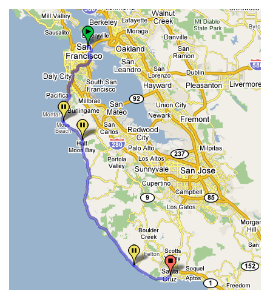
Op de eerste dag van mijn verblijf in San Francisco was ik al lopend naar Russian Hill op Lombard Street gegaan (die kronkelweg), maar het is ook een gewone openbare weg dus dat moet ik ook maar even uitproberen met mijn Beetle. En ook al is het nog koud het dak gaat weer gewoon open. Na dit korte ritje is het tijd om op zoek te gaan naar Highway 1. Een fatsoenlijke wegenkaart heb ik niet (dom) maar gelukkig is mijn richtinggevoel redelijk betrouwbaar. Ik kom echter al snel in de mist terecht waardoor ik het dak toch maar even dicht doe…
De heenweg zal ik tot vlakbij Santa Cruz onder een donker wolkendek afleggen, al levert ook dit een indrukwekkende sfeer op. Als ik om een uur of 16 weer dezelfde weg terug neem is het wél stralend zonnig en kan het grootste gedeelte van de reis het dak open. Dit is een ervaring die ik iedereen kan aanraden, genieten! Aan de linkerkant de Grote Oceaan, aan de rechterkant een afwisselend heuvellandschap en boven je hoofd een stralende zon.
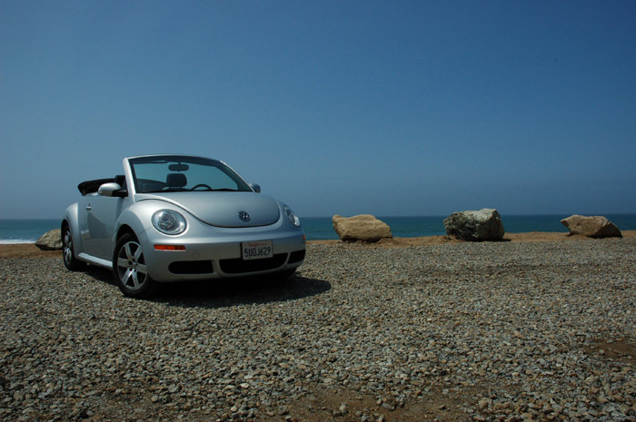
Het rijden op de Amerikaanse wegen is erg aangenaam en de voorrangsregels werken uitstekend. Voorrang gaat hier volgens het principe ‘wie het eerst komt, het eerst maalt’. Het is even opletten dat je ook rechts ingehaald kunt worden maar verder gaat alles heel soepel.
Naast het autorijden heb ik ook in Santa Cruz een tijdje rondgekeken. Santa Cruz heeft de beroemde Beach Boardwalk, een pretpark(je) uitgesmeerd over de lengte van een strand. Het stelt nog minder voor dan de Valkenier maar het is wel leuk om te zien. Ik had gehoopt om ook een tijdje op het strand te kunnen zitten, maar na twee pogingen heb ik dit opgegeven. Er waait namelijk een wind over het strand die voor een voortdurende zandstorm zorgt, wat niet erg prettig is. Op de terugweg zit er nog een flinke schep zand in m’n oor…
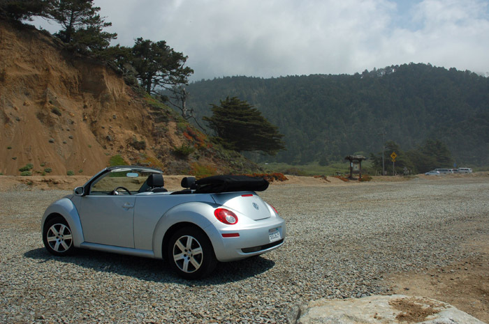 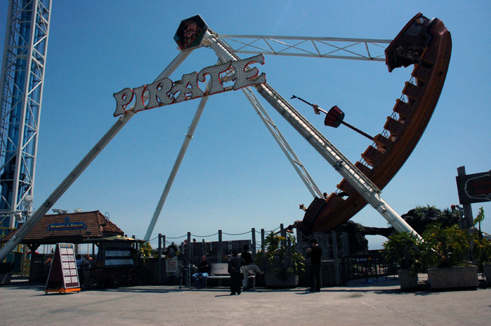 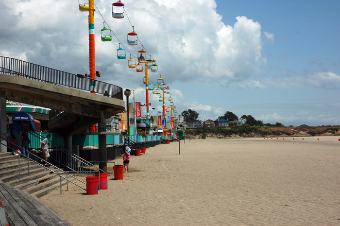 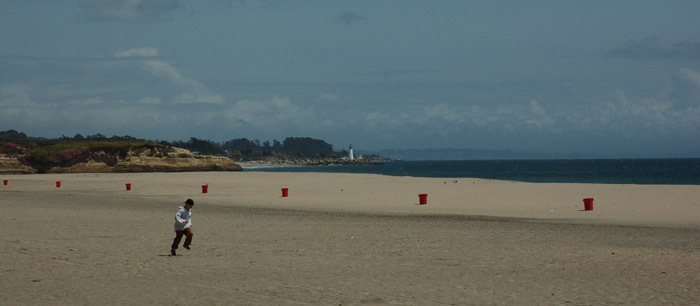 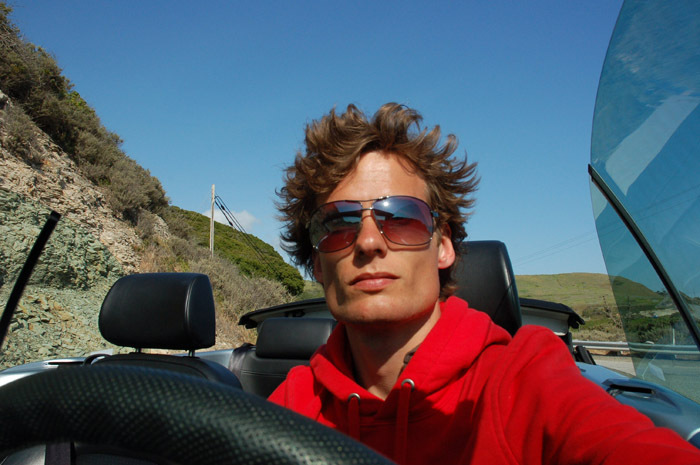 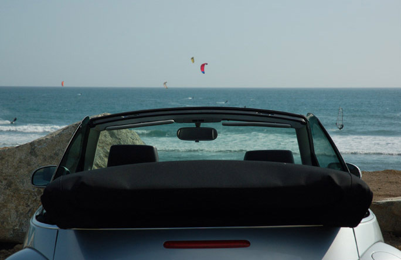 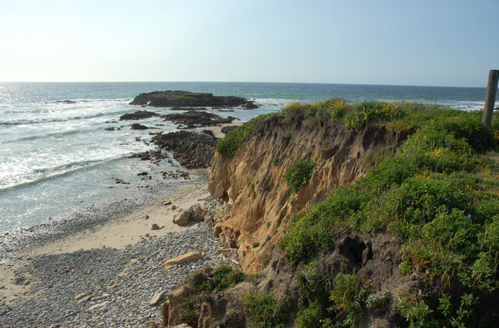 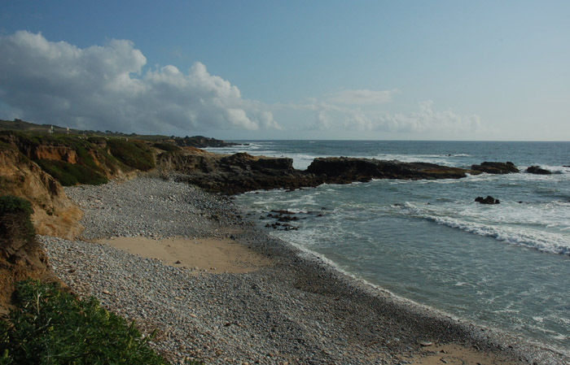